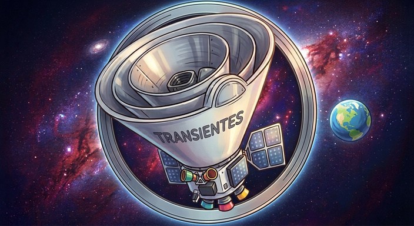
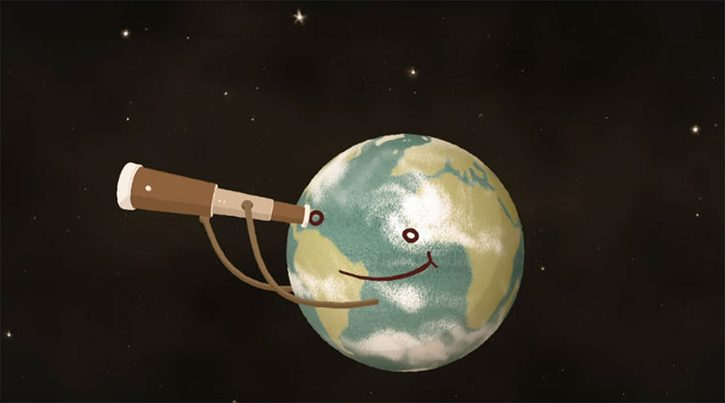
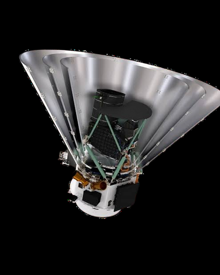
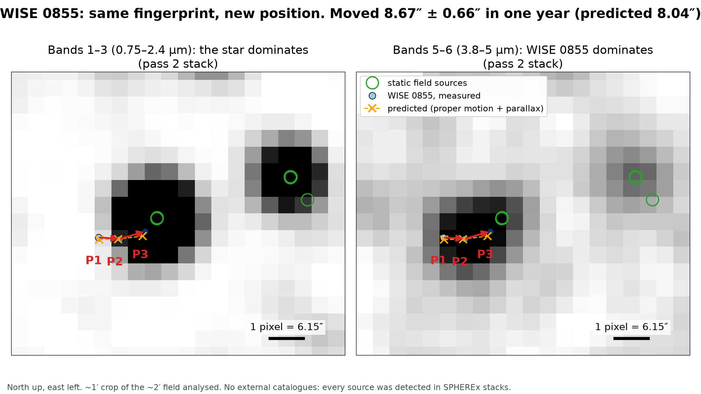

A free web viewer for NASA's SPHEREx infrared sky: simple enough for any curious mind, deep enough for science (SDG 4).
Who here could discover a star nobody knows?
NASA Space Apps Challenge 2026 · Planet X and SPHEREx · Team Transientes


Citizen science works. SPHEREx had no tool for it — until now.
Credits: Zooniverse / Backyard Worlds: Planet 9 · Illustration: NASA/JPL-Caltech
of STEM students in Chile choose natural sciences or mathematics.
Source: Minuta 24, OPPES-USACH (2024), pp. 4 and 6; data from mifuturo.cl.
Recorded from the real app · data cached so the video does not wait for downloads
Blink dates and colors, then earn your badge in Mission mode.
Spherix, the in-app guide, walks you through every step, in English or Spanish.
Subtract, stack and build the 102-color spectrum of any spot.
WISE 0855 moved in one year; proper motion + parallax predict 8.04″. In a blind search, matching by position found no moving source; matching by its spectral fingerprint found one: WISE 0855. Subtracting its colors erases the stars next to it.

Team Transientes · ages 17 to 52 · making frontier science reachable for anyone with a browser.
This project uses data products from SPHEREx, a joint project of JPL and Caltech funded by NASA, via NASA/IPAC IRSA; 2MASS and AllWISE via CDS/IRSA. Built with Aladin Lite and Astropy.